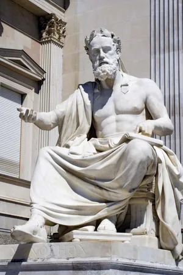

Discover the most famous philosophers
Explore the wisdom of ancient Greek philosophers

470-399 BCE
Socrates: The Father of Western Philosophy
Known for the Socratic method and his famous declaration "I know that I know nothing." Explore his revolutionary approach to wisdom and ethics.
Read more..

430-354 BCE
Xenophon: Historian and Student of Socrates
Student of Socrates, historian, and philosopher known for his historical works and practical approach to Socratic teachings.
Read more..
495-429 BCE
Pericles: Leader of the Golden Age
Influential Athenian statesman and orator during the Golden Age of Athens. Discover his contributions to democracy and culture.
Read more..